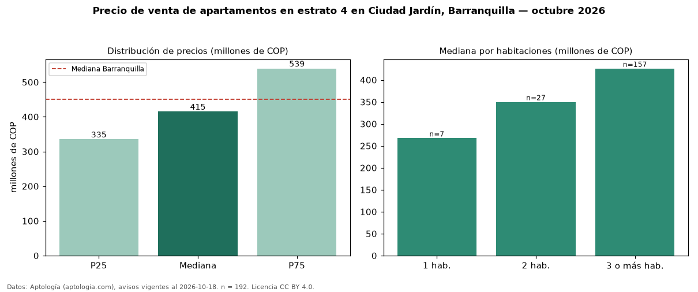

Precio de venta de apartamentos en estrato 4 en Ciudad Jardín, Barranquilla — octubre 2026
Con 192 avisos vigentes, el precio mediano de apartamentos en estrato 4 en venta en Ciudad Jardín, Barranquilla es COP 415 millones. Frente a la mediana de toda la vivienda de estrato 4 de Ciudad Jardín (COP 530 millones, n = 351), queda 22 % por debajo; este segmento reúne el 55 % de esos avisos. Por metro cuadrado, la mediana es COP 4,38 millones/m² (n = 185), 7 % por encima del conjunto de referencia (COP 4,08 millones/m²). El área mediana anunciada es 97 m². El segmento con más oferta es el de 3 o más habitaciones (157 avisos, mediana COP 426 millones); pasar de 1 habitación a 3 o más habitaciones cambia la mediana +59 %. La administración mediana declarada es COP 436.500 al mes (n = 146). La mediana de todos los apartamentos en venta de Barranquilla es COP 450 millones (−8 % de diferencia). La mitad central de los avisos va de COP 335 millones a COP 539 millones (razón 1,6), una dispersión moderada. Datos: Aptología (aptologia.com), CC BY 4.0 — https://www.aptologia.com/venta/barranquilla/ciudad-jardin. Archivos: PDF, CSV con las cifras y gráfica PNG.

| Avisos únicos | 192 |
|---|---|
| Percentil 25 | COP 335.000.000 |
| Mediana | COP 415.000.000 |
| Percentil 75 | COP 539.111.000 |
| Mediana por m² | COP 4.375.000 |
Fuente: avisos vigentes de portales inmobiliarios recopilados por Aptología, deduplicados (mínimo 30 avisos únicos por celda). Precios pedidos, no cerrados. Fecha: 2026-10-18.